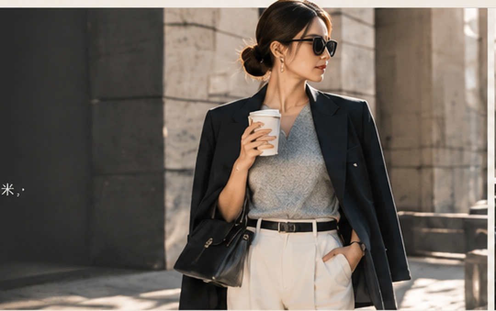
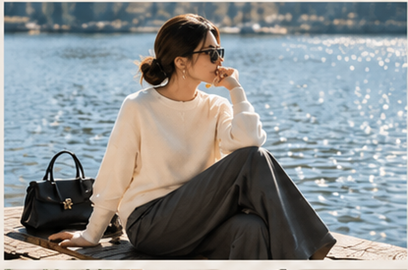
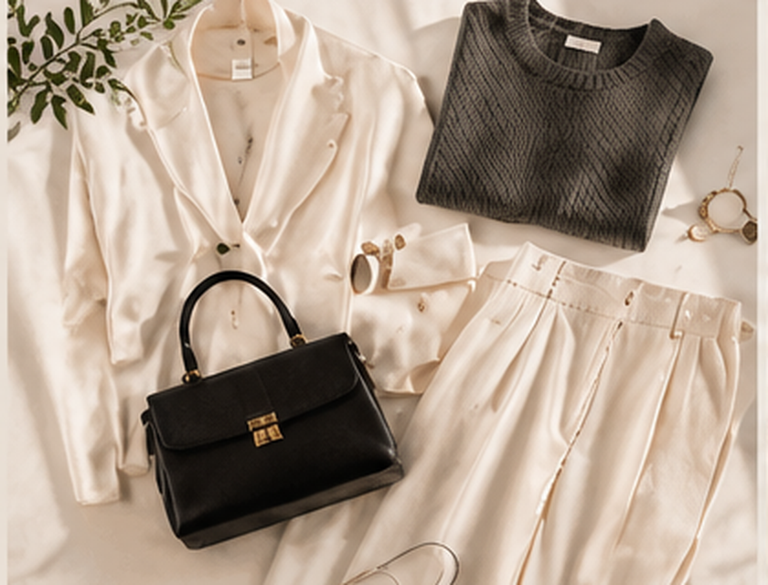
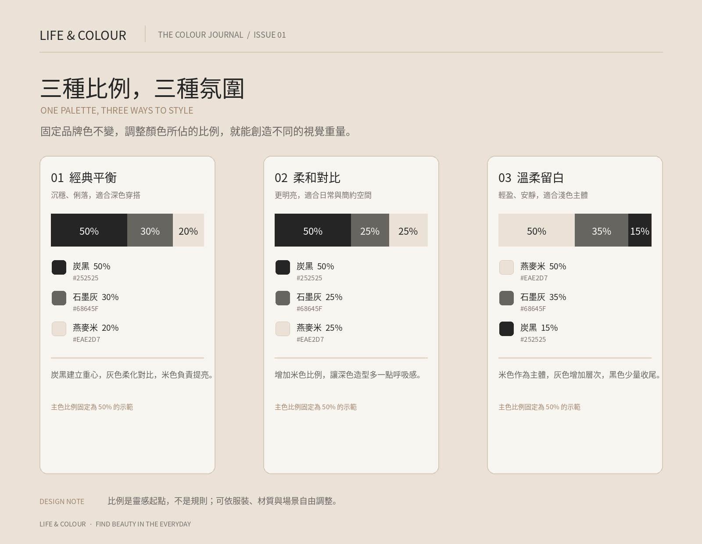

有些配色不會在第一眼大聲吸引你，卻會讓人越看越舒服。黑、灰、白、棕與米色就是這樣的組合：它們不搶戲，卻能讓輪廓、材質與細節被好好看見。
01／認識本期色票
色碼（HEX）是網頁與數位設計常用的顏色表示方式。你可以複製下列色碼，作為製作穿搭拼貼、社群圖片或設計作品的起點。
炭黑 Charcoal
#252525
沉穩、有份量，適合外套、鞋履、標題與需要視覺重心的位置。
石墨灰 Graphite
#68645F
比純黑柔和，適合針織、長褲、包款，也很適合用在輔助文字上。
柔白 Soft White
#FFFFFF
乾淨明亮，能平衡深色的重量，讓整體看起來更清爽。
煙燻棕 Smoky Brown
#A1846C
帶一點灰調的棕色，適合皮革配件、腰帶、包包與溫暖的小細節。
燕麥米 Oat Beige
#EAE2D7
溫柔又不過分甜膩，可用於襯衫、針織、外套，也很適合作為大面積背景。
穿搭與生活視覺




02／簡單的配色比例
初學時可以先試試「大面積基底＋中間色＋少量深色」的方式。比例不是硬性規則，而是幫助畫面保持平衡的起點。
60／25／15 配色法
60% 燕麥米 #EAE2D7 — 主體與大面積基底
25% 石墨灰 #68645F — 增加層次
15% 炭黑 #252525 — 收束視覺重心
03／穿搭靈感：不用想太多的三種組合
燕麥米＋炭黑：米色上衣搭配黑色長褲或長裙，簡潔俐落；再用棕色皮帶或包包加一點溫度。
石墨灰＋柔白：灰色針織搭白色襯衫，利用領口、袖口的層次，讓整體看起來更有細節。
炭黑＋煙燻棕：深色外套搭配棕色鞋履或包款，低調但不單調。不同材質也能創造變化，例如羊毛、棉布與皮革。
04／把色彩帶進生活
這組配色也很適合房間、書桌或個人網站。先用燕麥米建立明亮的底，再用炭黑做標題與線條，棕色只出現在少數重點上。當畫面留白足夠，顏色就更容易被看見。
END OF ISSUE 01
這是 LIFE & COLOUR 的第一期。收藏這組色票，下一次選衣服、整理房間或製作設計時，就從它開始吧。